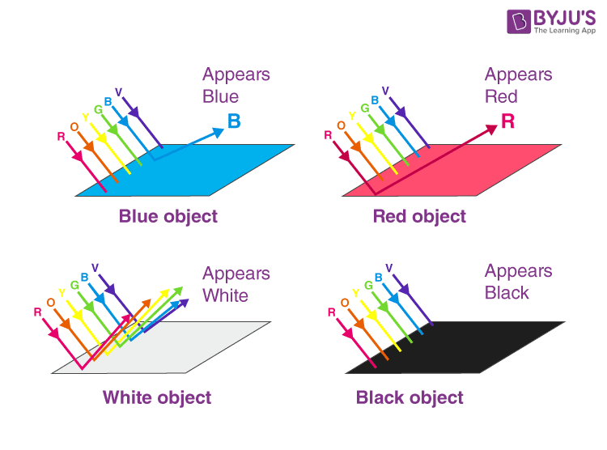
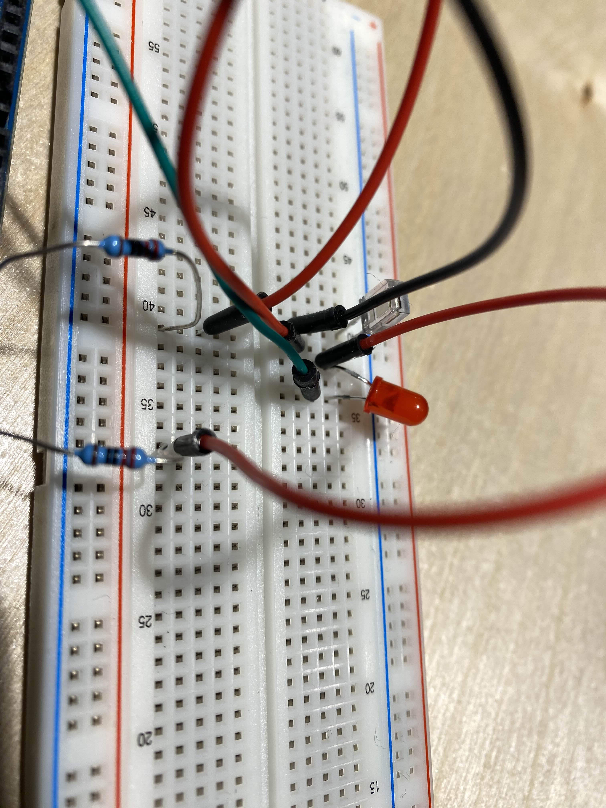
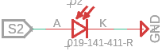
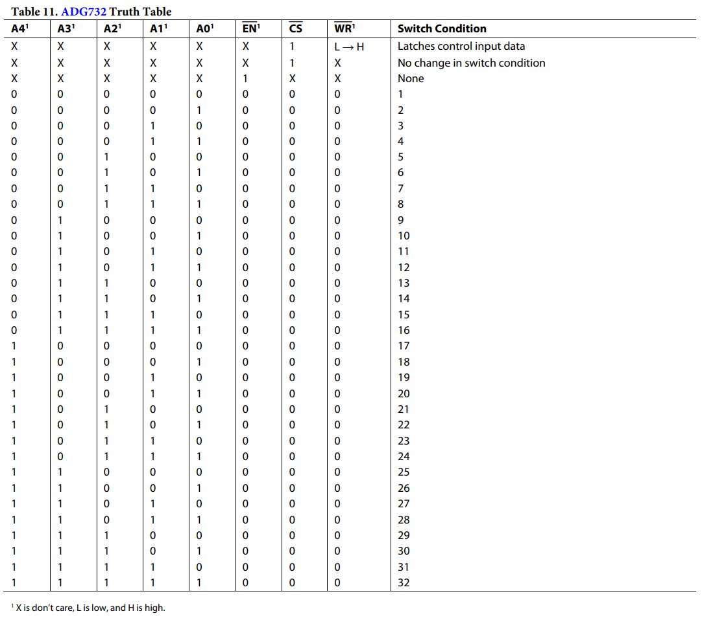
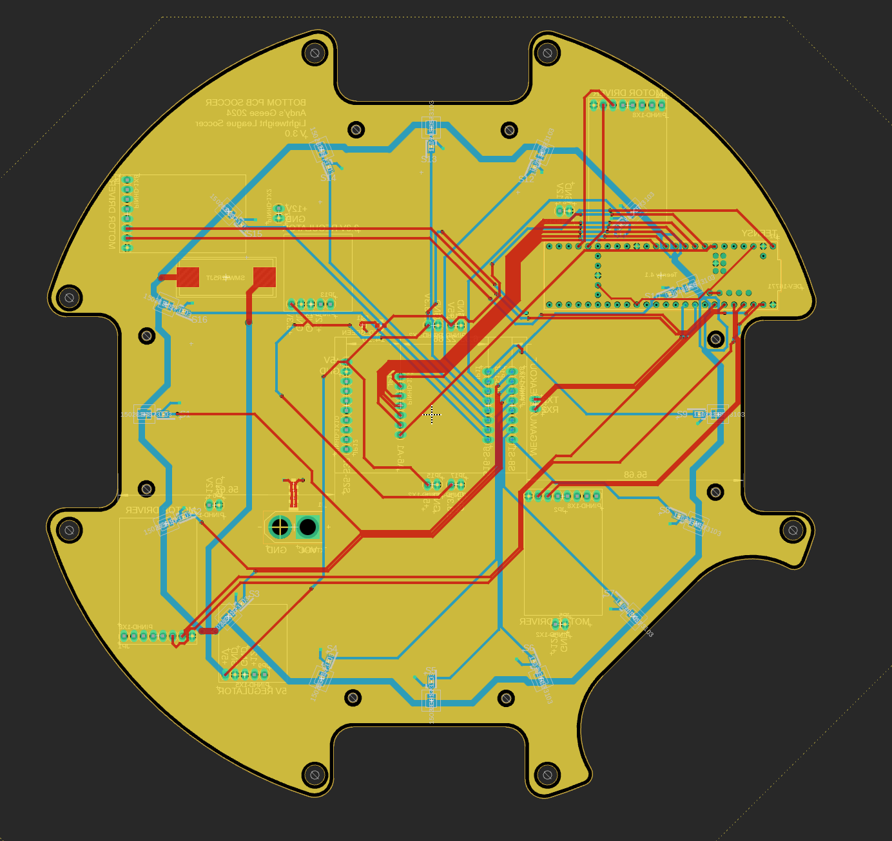

Color Sensors
Principle
The principle behind most color sensors (ours and commercial included) focuses on a basic physics concept known as color theory. As I’m not a real teacher, I am not fully qualified to teach this principle, but I can give a quick breakdown.
White light consists of three (primary) different colors: Red, Green, and Blue. We can make any color by mixing those. The reason we perceive that all objects have colors is because when white light (sunlight) is shone on the objects, their surface reflects a combination of Red, Green and Blue in order for those colors to mix and allow us to perceive a color. The surface in question, depending on their color, will absorb all light that doesn’t reflect that color. Therefore, if we look at a green table under a white light, it absorbs all the other colors of light and reflects green light, which allows our eyes to perceive green. You may already know this but if you do not, here is an image that explains it better than me, courtesy of BYJU:
Thus, if a photodiode, filtered so that it only detects a certain color is pointed at the soccer table and provided with a color of light that will be absorbed by the green field and reflected by the white lines, is placed onto the bottom of the robot, it should in theory push a voltage if it is exposed to the white line.
In our case, the red LED will shine towards the field. If it hits the white line, it would reflect a red light to the photodiode. However if it hits the green field, the red light source does not have a component color of green to reflect. Therefore, the voltage reading should be lower.
This means that the photodiode can just push a voltage that can be read from an MCU.
The photodiode does not need to be connected to power, rather, it can be connected on one end to ground and one end to the analog pin. This is because it can push a voltage without needing a current, given a voltage can exist without current but not vice versa.
Again, arduino works remarkably well for this.
By running a simple analogIn(), the ADC on board can evaluate this analog value for the photodiode, and we can see a clear difference between the line and field.
Execution
As always, principle works very differently from execution.
In this case, we first purchased a photodiode (THT and filtered for 940nm) and tested with a cheap THT (through hole technology) red LED. This actually (surprisingly) gave usable values.
We then adapted this design onto our bottom PCB.
However, since most MCUs don’t have enough analog pins for an array of these, we had to make use of a multiplexer. Given our limited space, we opted for an SMD QFP package (search this up if you don’t know what it is) 32 channel multiplexer.
We settled on the ADG732:
By placing this on a separate PCB and adding pin headers, we can make this modular and easy to replace in case of damage.

Now, by switching around the ports with code (through values given in the truth table), we can access each individual color sensor on the array.
The resulting PCB is shown below:
